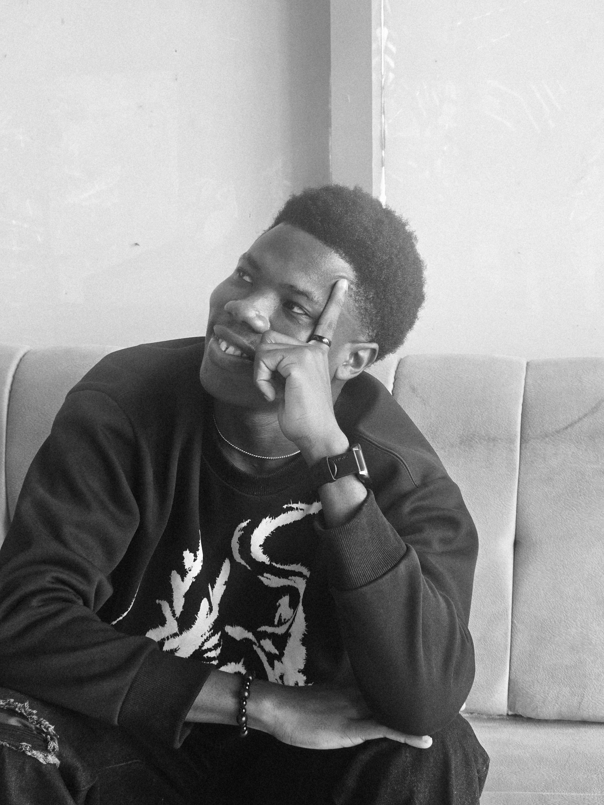

About
A closer look at my education, where I want to go with it, and what I do outside of coursework.

I am a software engineer with 5 years of experience. I currently work at Moniepoint as a software engineer where I build systems and help design robust web applications that help people reach their financial happiness.
My interest in computing came from curiosity. I enjoyed taking apart how things worked, figuring out why a program behaved a certain way, and gradually moving from using software to wanting to build it.
I aim toward senior engineering roles, with a focus on backend efficiency and web technologies. I want to build systems that are used by real people daily, creating solutions that are reliable and scalable.